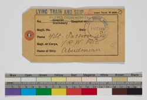

Outside the Cambridge University Library, icicles are hanging off the trees and the snow has thrown a thin blanket of silence over the streets. Inside, though, the quality of silence is different, it has weight. This silence is warm and velvety, luxurious. Walking past secluded alcoves lined with great tomes, all I can hear is pages turning and the rhythm of my own footsteps following me along the corridors like the start of a poem.
Passing the backs in the reading room, curved like question marks, I remember Wim Wenders’ film Wings of Desire, and the great scene of the angels in black overcoats passing through the library. Suddenly, like them, I am listening to something that is not silence at all, but the murmur of questions, the thoughts and stories of the people working here, as well as the voices coming out of the books.
In an upper room, Emma Saunders is cataloguing the papers of the First World War poet Siegfried Sassoon. On a small cushion that cradles the notebooks, she carefully opens his childhood poems for Mamsy, and there is Sassoon speaking to me in his clear ten-year-old voice.
He has tried to create a whole book of poems as a birthday gift for his mother, complete with illustrations, a frontispiece and instructions like ‘turn over’ just in case she doesn’t think of it herself. There are all the places where he changes his mind about a word, crosses it out, makes a spelling mistake. At ten he has read enough older poets to copy their poetic melancholy and sometimes just take a few lines he likes.
He goes on to fill notebook after notebook, even in the war when he is hospitalised, first with ‘trench fever’ (actually picked up in the barracks rather than the trenches) then shot through the shoulder, and later wounded in the head. In the archive, among all the poems, is a hospital tag, a seemingly prosaic thing that tells a story of its own.
Image caption:
‘Siegfried Sassoon’s hospital ship identification tag, used when he was evacuated home during the Battle of the Somme, August 1916. From CUL MS Add. 9852/1/7.
See Emma’s blog at:
https://specialcollections.blog.lib.cam.ac.uk/?p=3039
Imtiaz Dharker, poet in residence at the University Library.
14th February 2013 | |
Today is Valentine’s Day the day when a poem can become a gift of love.
A poem is like a pearl – a language-jewel provoked into existence by the grit of feeling or revelation, when language is love’s stammering, inarticulate messenger.
Words, Wide Night
Somewhere on the other side of this wide night
and the distance between us, I am thinking of you.
The room is turning slowly away from the moon.
This is pleasurable. Or shall I cross that out and say
it is sad? In one of the tenses I singing
an impossible song of desire that you cannot hear.
La lala la. See? I close my eyes and imagine the dark hills I would have to cross
to reach you. For I am in love with you and this
is what it is like or what it is like in words.
Carol Ann Duffy
There are many stories, tokens and gifts of love in Cambridge University museums and collections. Step over the threshold and find an idea for your love poem.
For more thoughts on love poetry, go to our resources page where Carol Ann Duffy writes about her favourite love poems.
Beginning his reading, Sean Borodale described the museum as a theatre of light which captures time and replays it.
Sean read from Bee Journal and his earlier long poem about a walk through London. Listen to a recording ‘Winter Honey’ below and download more of Sean’s poems on our resources page.

I take my daughters to ballet most Saturday mornings. One of the things they practise is good toes/bad toes. The teacher instructs the girls to sit on the floor and stretch their legs and then raise their feet up. When the feet are raised upward the girls all shake their heads, tut and then to add insult to the toes they callously call out baaaad toes! After this, the girls elongate their toes, serve up a morphine-high happy clapping sound whilst calling out gooood toes!
Ballerinas are not the only ones with a thing about toes. I too have been developing a thing about toes. I recently discovered, whilst researching for the Ramayana, that women in ancient India would probably have worn toe rings on each of their ten toes; that each toe-ring would need to be appropriate for enhancing the beauty of each toe. So potentially, every woman would have ten different toe-rings on their feet. As the women would not necessarily be wearing anything so cumbersome as shoes, and as they would probably be wearing clothes to cover most of their body, it would seem that toe-rings would have taken on a great social responsibility.
I asked Sarah-Jane and Mark at MAA to show me some old Indian toes rings they have in their collection. Plus too, any anklets and suchlike things, please…This research would help me furnish my version of the Ramayana with vital concrete details.
Mark has provided some images to accompany this piece. You will note some seriously potent anklets that weigh a few pounds each. But I’m not so interested in anklets (I think Mark’s your anklet man!), it’s toe-rings I’m after. You will note that some of the images show toe-rings festooned with double-breasted bells. Why bells? Why, so the skilled walker can perform a dandy tune whilst executing a mesmerising walk when out shopping for gourds or when strutting at a mela.
I have yet to observe an interest in toe-rings around our shores; apart from Brighton and Totnes, and there it’s only a faddish once-in-a-decade-on-one-toe-only thing thank-you-very-much.
If you happen to be adorning Indian-style toe-rings this summer along the canals, parks or grottoes of Cambridge you will know I have seen your feet and savoured them, for you will hear me from behind a bush clapping and cheering with gooooooooood toe-rings!
Images: Toe rings from New Delhi, India. Collected by Captain Henry R. Lawrence. MAA E 1909.96 a, f & g
Daljit Nagra
08th February 2013 | |
Friday 1 February was a busy day for Don Paterson in the Whipple Museum.
In the afternoon he led a masterclass with 13 Cambridgeshire poets, followed by an evening reading to over 50 people who enjoyed an after hours visit to the museum.
Don’ reading was a mixture of published and unpublished poems.
The first poem he reads is The Lover – my favourite poem and also the Whipple staff’s favourite poem. You can listen to this by clicking the link below, and you can find his other poems under the Downloads section of the Resources page.
Many of the extraordinary objects in the Whipple’s collection have caught Don’s eye during his residency but the one he has been thinking about most, and as he revealed, may be the inspiration for his commissioned poem is the Artificial Horizon (image attached) which was part of Robert Whipple’s original gift to the University of 1000 scientific instruments (hence the very low accession number, Wh.0566).
An artificial horizon can be used in darkness, fog, or when the real horizon is obscured for any other reason. They were often used in conjunction with other instruments that need a horizontal level, such as a sextant or reflecting circle. There are records of use from the
mid 16th century onwards.
The 2 basic types of artificial horizon were mercury with a glass cover – the top layer of the mercury always staying level (this type is not very practical for use on a ship) and bubble levels, where the position of bubbles in a liquid shows which way the axis is tilting.
The Whipple’s artificial horizon description:
Black glass artificial horizon, mounted in brass, with three brass levelling screws. Glass bubble level. Fitted wooden box, covered with shagreen leather and lined with blue velvet.
Brass hinge and hook fasteners.
1800-1900 (c)
Come and see it.
Helen Taylor
« Newer posts Older posts »